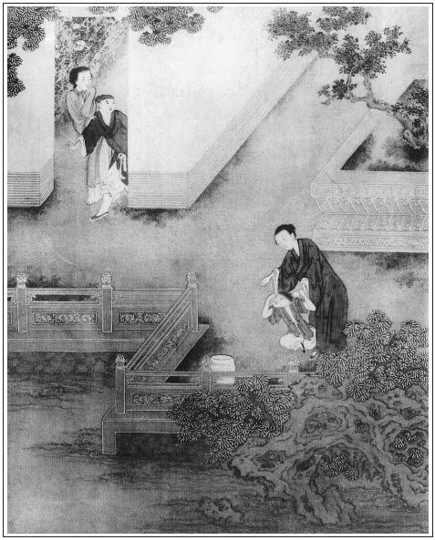

張回人知此回為寫金蓮之惡，不知是作者完一事之結尾，渡一事之過文也。蓋特地寫一蕙蓮，忽令其煙消火滅而去，不幾嫌筆墨直截，故又寫一遺鞋：使上文死去蕙蓮，從新在看官眼中一照，是結尾也。因金蓮之脫鞋，遂使敬濟得花關之金鑰，此文章之渡法也。然而一遺鞋，則金蓮之狂淫已不言而盡出；一收鞋，則蕙蓮之遺想又不言而盡出矣。
蕙蓮原名金蓮。今金蓮得蕙蓮之「金蓮」，而必用刀剁之，是蕙蓮為金蓮排擠以死之惡，又於其死後為之再彰其憤，使金蓮之惡，不堪一提起也。
寫打鐵棍，見西門為色所迷，而金蓮已盤曲惡根，不可動搖，由此放膽行事，以致有敬濟之事。然則月娘引敬濟，西門縱金蓮，由漸而成，乃有後文之事。甚矣，履霜之戒，為古人所重也。
此回單狀金蓮之惡，故惟以「鞋」字播弄盡情。直至後三十回，以春梅納鞋，足完「鞋」字神理。細數凡八十個「鞋」宇，如一線穿去，卻斷斷續續，遮遮掩掩。而瓶兒、玉樓、春梅身份中，莫不各有一「金蓮」，以襯金蓮之「金蓮」，且襯蕙蓮之「金蓮」，則金蓮至此已爛漫不堪之甚矣。
「葡萄架」後，便是金、瓶二人妒寵起頭，直至瓶兒死，金蓮方暢。此處卻回顧蕙蓮，必用金蓮、以刀剁之。明寫蕙蓮一人乃瓶兒前半小樣，是蕙蓮在前，如意在後，蕙蓮乃瓶兒前車，如意乃瓶兒後車也。故蕙蓮死，即接「翡翠軒」；瓶兒死，即接「口脂香」，緊捷之甚。
詩曰：
幾日深閨繡得成，看來便覺可人情。
一灣暖玉凌波小，兩瓣秋蓮落地輕。
南陌踏青春有跡，西廂立月夜無聲。
看花又濕蒼苔露，曬向窗前趁晚晴。

話說西門慶扶婦人到房中，脫去上下衣裳，張夾再脫衣。赤著身子，婦人止著紅紗抹胸兒。繡旁又一種態度。兩個並肩疊股而坐，重斟杯酌。西門慶一手摟過他粉頸，一遞一口和他吃酒，極盡溫存之態。睨視婦人云鬟斜嚲，酥胸半露，嬌眼乜斜，猶如沉酒楊妃一般，繡眉寫得嬌倩如生。張夾映前，餘韻攸然。纖手不住只向他腰裡摸弄那話。那話因驚，銀托子還帶在上面，軟叮噹毛都魯的累垂偉長。西門慶戲道：「你還弄他哩，都是你頭裡諕出他風病來了。」婦人問：「怎的風病。」西門慶道：「既不是瘋病，如何這軟癱熱化，起不來了，你還不下去央及他央及兒哩。」婦人笑瞅了他一眼。一面蹲下身子去，枕著他一隻腿，取過一條褲帶兒來，把那話拴住，用手提著，說道：「你這廝！頭裡那等頭睜睜，股睜睜，把人奈何昏昏的，張夾又點出。這咱你推風症裝佯死兒。」繡眉分明穢語，閱來但見其風騷，不見其穢，可謂化腐臭為神奇矣。提弄了一回，放在粉臉上偎晃良久，然後將口吮之，又用舌尖挑砥其蛙口。那話登時暴怒起來，裂瓜頭凹眼睜圓，落腮鬍挺身直豎。西門慶亦發坐在枕頭上，令婦人馬爬在紗帳內，盡著吮咂，以暢其美。俄爾淫思益熾，復與婦人交接。婦人哀告道：「我的達達，你饒了奴罷，又要捉弄奴也！」是夜，二人淫樂為之無度。有詞為證：
戰酣樂極，雲雨歇，嬌眼乜斜。手持玉莖猶堅硬，告才郎將就些些。滿飲金盃頻勸，兩情似醉如癡。張夾是兩番之雨。
一夜晚景題過。到次日，西門慶往外邊去了。婦人約飯時起來，換睡鞋，尋昨日腳上穿的那雙紅鞋，張夾鞋三。左來右去少一隻。問春梅，春梅說：「昨日我和爹搊扶著娘進來，秋菊抱娘的鋪蓋來。」婦人叫了秋菊來問。秋菊道：「我昨日沒見娘穿著鞋進來。」張夾鞋四。婦人道：「你看胡說！我沒穿鞋進來，張夾鞋五。莫不我精著腳進來了？」張夾寫盡狂淫。秋菊道：「娘你穿著鞋，怎的屋裡沒有？」繡眉秋菊蠢不必言，然金蓮醜態亦得他搶白一番方快。張夾妙，何嘗蠢來？鞋六。婦人罵道：「賊奴才，還裝憨兒！無過只在這屋裡，你替我老實尋是的！」這秋菊三間屋裡，床上床下，到處尋了一遍，那裡討那只鞋來？張夾鞋七。婦人道：「端的我這屋裡有鬼，攝了我這只鞋去了。張夾鞋八。連我腳上穿的鞋都不見了，張夾鞋九。要你這奴才在屋裡做甚麼！」張夾可笑。秋菊道：「倒只怕娘忘記落在花園裡，沒曾穿進來。」張夾妙，何嘗蠢來！婦人道：「敢是㒲昏了，繡旁自道。我鞋穿在腳上沒穿在腳上，張夾鞋十。我不知道？」張夾寫其荒淫如畫。叫春梅：「你跟著這奴才，往花園裡尋去。尋出來便罷，若尋不出來，叫他院子裡頂石頭跪著。」這春梅真個押著他，花園到處並葡萄架跟前，尋了一遍兒，那裡得來！正是：
都被六丁收拾去，蘆花明月竟難尋。
兩個尋了一遍回來，春梅罵道：「奴才，你『媒人婆迷了路兒──沒的說了』，『王媽媽賣了磨──推不的了』。」秋菊道：「不知甚麼人偷了娘的這只鞋去了，張旁先為敬濟一映。張夾鞋十一。我沒曾見娘穿進屋裡去。張夾局外人眼目明。敢是你昨日開花園門放了那個，拾了娘的這只鞋去了。」張夾妙，何嘗蠢！鞋十二。被春梅一口稠唾沫噦了去，罵道：「賊見鬼的奴才，又攪纏起我來了！六娘叫門，我不替他開？張夾便賴，妙。可可兒的就放進人來了？你抱著娘的鋪蓋就不經心瞧瞧，還敢說嘴兒！」一面押他到屋裡，回婦人說沒有鞋。張夾鞋十三。婦人叫踩出他院子裡跪著。秋菊把臉哭喪下水來，說：張夾如畫。「等我再往花園裡尋一遍，尋不著隨娘打罷。」春梅道：「娘休信他。花園裡地也掃得乾乾淨淨的，就是針也尋出來，那裡討鞋來？」張夾鞋十四。秋菊道：「等我尋不出來，教娘打就是了。你在旁戳舌兒怎的！」婦人向春梅道：「也罷，你跟著這奴才，看他那裡尋去！」
這春梅又押著他，在花園山子底下，各處花池邊，松牆下，尋了一遍，沒有。他也慌了，張夾至此才慌，可見秋菊昨日眼明。但昨日不說，為蠢耳。被春梅兩個耳刮子，就拉回來見婦人。秋菊道：「還有那個雪洞裡沒尋哩。」春梅道：「那藏春塢是爹的暖房兒，娘這一向又沒到那裡。我看尋不出來和你答話！」於是押著他，到於藏春塢雪洞內。正面是張坐床，旁邊香幾上都尋到，沒有。又向書篋內尋，春梅道：「這書篋內都是他的拜帖紙，娘的鞋怎的到這裡？沒的摭溜子捱工夫兒！繡眉尋得無因，卻用此語庇護。翻的他恁亂騰騰的，惹他看見又是一場兒，張夾二「他」字寫春梅。你這歪刺骨可死的成了！」良久，只見秋菊說道：「這不是娘的鞋！」繡眉又為蕙蓮作餘波。張旁奇文。張夾鞋十五。在一個紙包內，裹著些棒兒香與排草，取出來與春梅瞧：「可怎的有了，剛才就調唆打我！」春梅看見，果是一隻大紅平底鞋兒，張旁又為藏春一夜瀑出血淚。張夾鞋十六。說道：「是娘的，怎生得到這書篋內？好蹊蹺的事！」於是走來見婦人。婦人問：「有了我的鞋，端的在那裡？」春梅道：「在藏春塢，爹暖房書篋內尋出來，和些拜帖子紙、排草、安息香包在一處。」婦人拿在手內，取過他的那只來一比，都是大紅四季花緞子白綾平底繡花鞋兒，張夾鞋十七。綠提根兒，藍口金兒。惟有鞋上鎖線兒差些，張夾鞋十八。一隻是紗綠鎖線，一隻是翠藍鎖線，不仔細認不出來。張夾一鞋描寫細緻。婦人登在腳上試了試，尋出來這一隻比舊鞋略緊些，張夾鞋十九。方知是來旺兒媳婦子的鞋：張眉可知元夜蕙蓮套穿金蓮鞋之妙。亦不知其金針如何穿插矣！張夾又弄蕙蓮餘波。鞋二十。「不知幾時與了賊強人，不敢拿到屋裡，悄悄藏放在那裡。不想又被奴才翻將出來。」看了一回，說道：「這鞋不是我的。張夾鞋二十一。奴才，快與我跪著去！」吩咐春梅：「拿塊石頭與他頂著。」那秋菊哭起來，說道：「不是娘的鞋，是誰的鞋？張夾鞋二十二。我饒替娘尋出鞋來，張夾鞋二十三。還要打我；若是再尋不出來，不知還怎的打我哩！」婦人罵道：「賊奴才，休說嘴！」春梅一面掇了塊大石頭頂在他頭上。婦人又另換了一雙鞋穿在腳上，嫌房裡熱，吩咐春梅把妝台放在玩花樓上，梳頭去了，不在話下。
卻說陳敬濟早晨從鋪子裡進來尋衣服，張夾絕不妨嫌，可笑。走到花園角門首。張夾補一花園角門。小鐵棍兒在那裡正頑著，見陳敬濟手裡拿著一副銀網巾圈兒，便問：「姑夫，你拿的甚麼？與了我耍子罷。」敬濟道：「此是人家當的網巾圈兒，來贖，張夾網巾圈亦當，一笑。我尋出來與他。」那小猴子笑嘻嘻道：「姑夫，你與了我耍子罷，我換與你件好物件兒。」敬濟道：「傻孩子，此是人家當的。你要，我另尋一副兒與你耍子。你有甚麼好物件，拿來我瞧。」那猴子便向腰裡掏出一隻紅繡花鞋兒張夾鞋二十四。與敬濟看。敬濟便問：「是那裡的？」那猴子笑嘻嘻道：「姑夫，我對你說了罷！我昨日在花園裡耍子，看見俺爹吊著俺五娘兩隻腿兒，在葡萄架兒底下，搖搖擺擺。繡旁諧甚。張夾西門自傳衣缽在此，夫復難尤。落後俺爹進去了，我尋俺春梅姑娘要果子吃，在葡萄架底下拾了這只鞋。」張夾鞋二十五。敬濟接在手裡：曲是天邊新月，紅如退瓣蓮花，張夾黃絹幼婦。把在掌中，恰剛三寸。就知是金蓮腳上之物，便道：「你與了我，明日另尋一對好圈兒與你耍子。」猴子道：「姑夫你休哄我，我明日就問你要哩。」敬濟道：「我不哄你。」那猴子一面笑的耍去了。這敬濟把鞋褪在袖中，自己尋思：「我幾次戲他，他口兒且是活，及到中間，又走滾了。不想天假其便，此鞋落在我手裡。張夾鞋二十六。今日我著實撩逗他一番，不怕他不上帳兒。」正是：
時人不用穿針線，那得工夫送巧來？
陳敬濟袖著鞋，張夾鞋二十七。逕往潘金蓮房來。轉過影壁，只見秋菊跪在院內，便戲道：「小大姐，為甚麼來？投充了新軍，又掇起石頭來了？」金蓮在樓上聽見，便叫春梅問道：「是誰說他掇起石頭來了？繡眉開口便令人解頤。乾淨這奴才沒頂著？」春梅道：「是姑夫來了。秋菊頂著石頭哩。」婦人便叫：「陳姐夫，樓上沒人，繡旁冷甚。你上來。」這小伙兒打步撩衣上的樓來。只見婦人在樓上，前面開了兩扇窗兒，掛著湘簾，張夾是樓窗。那裡臨鏡梳妝。這陳敬濟走到旁邊一個小杌兒坐下，看見婦人黑油般頭髮，手挽著梳，還拖著地兒，紅絲繩兒紮著一窩絲，纘上戴著銀絲䯼髻，還墊出一絲香雲，䯼髻內安著許多玫瑰花瓣兒，露著四鬢，打扮的就是活觀音。繡眉寫得花光鬢影，蕩人心魄。須臾，婦人梳了頭，掇過妝台去，向面盤內洗了手，穿上衣裳，喚春梅拿茶來與姐夫吃。那敬濟只是笑，不做聲。繡眉眉眼俱有勾挑意，妙甚。張旁眉眼俱動。張夾白描。婦人因問：「姐夫，笑甚麼？」敬濟道：「我笑你管情不見了些甚麼兒？」婦人道：「賊短命！我不見了，關你甚事？你怎的曉得？」敬濟道：「你看，我好心倒做了驢肝肺，你倒訕起我來。恁說，我去了。」抽身往樓下就走。被婦人一把手拉住，說道：「怪短命，會張致的！來旺兒媳婦子死了，沒了想頭了，卻怎麼還認的老娘。」繡眉又插入醋語，竟一日不忘。張夾以來旺媳婦引出自己。因問：「你猜著我不見了甚麼物件兒？」這敬濟向袖中取出來，提著鞋拽靶兒，笑道：張夾鞋二十八。「你看這個是誰的？」婦人道：「好短命，原來是你偷拿了我的鞋去了！教我打著丫頭，繞地裡尋。」敬濟道：「你怎的到得我手裡？」婦人道：「我這屋裡再有誰來？敢是你賊頭鼠腦，偷了我這只鞋去了。」張夾鞋二十九。敬濟道：「你老人家不害羞。我這兩日又不往你屋裡來，我怎生偷你的？」婦人道：「好賊短命，等我對你爹說，你倒偷了我鞋，張夾鞋三十。還說我不害羞。」敬濟道：「你只好拿爹來諕我罷了。」婦人道：「你好小膽兒，明知道和來旺兒媳婦子七個八個，你還調戲他，張旁頻提蕙蓮，令人有遺簪墜珥這之想，所為返照文字也。你幾時有些忌憚兒的！張夾又提蕙蓮，見敬濟眉眼，人人皆見其不堪。又照應上文也。既不是你偷了我的鞋，這鞋怎落在你手裡？張夾鞋三十一。趁早實供出來，交還與我鞋，張夾鞋三十二。你還便宜。自古物見主，必索取。但道半個不字，教你死在我手裡。」敬濟道：「你老人家是個女番子，且是倒會的放刁。這裡無人，咱們好講：你既要鞋，張夾鞋三十三。拿一件物事兒，我換與你，不然天雷也打不出去。」婦人道：「好短命！我的鞋應當還我，張夾鞋三十四。教換甚物事兒與你？」敬濟笑道：「五娘，你拿你袖的那方汗巾兒賞與兒子，兒子與了你的鞋罷。」繡眉勾挑軟暱處，在西門慶之上。張夾鞋三十五。婦人道：「我明日另尋一方好汗巾兒，這汗巾兒是你爹成日眼裡見過，不好與你的。」敬濟道：「我不。張夾如聞其聲。別的就與我一百方也不算，我一心只要你老人家這方汗巾兒。」婦人笑道：「好個牢成久慣的短命！我也沒氣力和你兩個纏。」張夾口諾心許矣。於是向袖中取出一方細撮穗白綾挑線鶯鶯燒夜香汗巾兒，上面連銀三字兒都掠與他。有詩為證：
郎君見妾下蘭階，來索纖纖紅繡鞋。
不管露泥藏袖裡，只言從此事堪諧。
這陳敬濟連忙接在手裡，與他深深的唱個喏。繡旁妙用。婦人吩咐：「好生藏著，休教大姐看見，繡旁自逗出私情。他不是好嘴頭子。」張夾何啻山盟海誓。敬濟道：「我知道。」一面把鞋遞與他，張夾鞋三十六。如此這般：「是小鐵棍兒昨日在花園裡拾的，今早拿著問我換網巾圈兒耍子。」如此這般，告訴了一遍。婦人聽了，粉面通紅，說道：「你看賊小奴才，把我這鞋弄的恁漆黑的！張夾沒的說了。鞋三十七。看我教他爹打他不打他。」敬濟道：「你弄殺我！打了他不打緊，敢就賴著我身上，是我說的。千萬休要說罷。」張夾又反襯西門之糊塗也。婦人道：「我饒了小奴才，除非饒了蠍子。」
兩個正說在熱鬧處，忽聽小廝來安兒來尋：「爹在前廳請姐夫寫禮帖兒哩。」婦人連忙攛掇他出去了。下的樓來，教春梅取板子來，要打秋菊。秋菊不肯躺，說道：「尋將娘的鞋來，張夾鞋三十八。娘還要打我！」婦人把陳敬濟拿的鞋張夾鞋三十九。遞與他看，罵道：「賊奴才，你把那個當我的鞋，張夾鞋四十。將這個放在那裡？」秋菊看見，把眼瞪了半日，說道：「可是作怪的勾當，怎生跑出娘三隻鞋來了？」張夾鞋四十一。婦人道：「好大膽奴才！你拿誰的鞋來搪塞我，張夾鞋四十二。倒說我是三隻腳的蟾？」不由分說，教春梅拉倒，打了十下。打有秋菊抱股而哭，望著春梅道：「都是你開門，教人進來，收了娘的鞋，張夾鞋四十三。這回教娘打我。」繡眉分明說得是，只覺其蠢，人情乎？張夾原是。春梅罵道：「你倒收拾娘鋪蓋，不見了娘的鞋，張夾鞋四十四。娘打了你這幾下兒，還敢抱怨人！早是這只舊鞋，張夾鞋四十五。若是娘頭上的簪環不見了，你也推賴個人兒就是了？繡眉語雖憊懶，氣象卻好。娘惜情兒，還打的你少。若是我，外邊叫個小廝，辣辣的打上他二三十板，看這奴才怎麼樣的！」張夾為後文打雪娥作引。幾句罵得秋菊忍氣吞聲，不言語了。
且說西門慶叫了敬濟到前廳，封尺頭禮物，送賀千戶新升了淮安提刑所掌刑正千戶。張夾出缺，好令西門做官矣。豈淡淡寫此一筆。本衛親識，都與他送行在永福寺，不必細說。西門慶差了鉞安送去，廳上陪著敬濟吃了飯，張夾烏得知？歸到金蓮房中。這金蓮千不合萬不合，把小鐵棍兒拾鞋之事張夾鞋四十六。告訴一遍，說道：「都是你這沒才料的貨平白幹的勾當！教賊萬殺的小奴才把我的鞋拾了，張夾鞋四十七。拿到外頭，誰是沒瞧見。被我知道，要將過來了。你不打與他兩下，到明日慣了他。」西門慶就不問：「誰告你說來。」一衝性子走到前邊。那小猴兒不知，正在石台基頑耍，被西門慶揪住頂角，拳打腳踢，殺豬也似叫起來，方才住了手。這小猴子躺在地下，死了半日，慌得來昭兩口子走來扶救，半日甦醒。見小廝鼻口流血，抱他到房裡慢慢問他，方知為拾鞋之事惹起事來。張夾鞋四十八。這一丈青氣忿忿的走到後邊廚下，指東罵西，一頓海罵道：「賊不逢好死的淫婦，王八羔子！我的孩子和你有甚冤仇？他才十一二歲，曉的甚麼？張旁妙語。知道𣭈也在那塊兒？平白地調唆打他恁一頓，打的鼻口中流血。假若死了，淫婦、王八兒也不好！稱不了你甚麼願！」廚房裡罵了，到前邊又罵，整罵了一二日還不定。因金蓮在房中陪西門慶吃酒，還不知。
晚夕上床宿歇，西門慶見婦人腳上穿著兩隻綠綢子睡鞋，張夾鞋四十九。大紅提根兒，因說道：「啊呀，如何穿這個鞋在腳？張夾鞋五十。怪怪的不好看。」婦人道：「我只一雙紅睡鞋，張夾鞋五十一。倒吃小奴才將一隻弄油了，那裡再討第二雙來？」西門慶道：「我的兒，你到明日做一雙兒穿在腳上。你不知，我達達一心歡喜穿紅鞋兒，張夾鞋五十二。看著心裡愛。」婦人道：「怪奴才！可可兒的來想起一件事來，我要說，又忘了。」因令春梅：「你取那只鞋來與他瞧。」張夾鞋五十三。──「你認的這鞋是誰的鞋？」西門慶道：「我不知是誰的鞋。」張夾鞋五十四。婦人道：「你看他還打張雞兒哩！瞞著我，黃貓黑尾，你幹的好繭兒！來旺兒媳婦子的一隻臭蹄子，寶上珠也一般，收藏在藏春塢雪洞兒裡拜帖匣子內，攪著些字紙和香兒一處放著。甚麼稀罕物件，也不當家化化的！怪不的那賊淫婦死了，墮阿鼻地獄！」繡眉只是家常口頭語，說來偏妙。又指著秋菊罵道：「這奴才當我的鞋，又翻出來張夾鞋五十五。，教我打了幾下。」吩咐春梅：「趁早與我掠出去！」春梅把鞋掠在地下，張夾鞋五十六。看著秋菊說道：「賞與你穿了罷！」那秋菊拾在手裡，說道：「娘這個鞋，張夾鞋五十七。只好盛我一個腳指頭兒罷了。」婦人罵道：「賊奴才，還教甚麼𣭈娘哩，他是你家主子前世的娘！不然，怎的把他的鞋這張夾鞋五十八。等收藏的嬌貴？到明日好傳代！沒廉恥的貨！」秋菊拿著鞋就往外走，張夾鞋五十九。被婦人又叫回來，吩咐：「取刀來，等我把淫婦剁作幾截子，掠到茅廁裡去！叫賊淫婦陰山背後，永世不得超生！」繡眉又一波。寫要強婦人邪心癡妒，入骨三分，疑有鬼神供其筆墨。因向西門慶道：「你看著越心疼，我越發偏剁個樣兒你瞧。」張旁恨語正是快語。西門慶笑道：「怪奴才，丟開手罷了。我那裡有這個心！」婦人道：「你沒這個心，你就賭了誓。淫婦死的不知往那去了，你還留著他的鞋做甚麼？張夾鞋六十。早晚有省，好思想他。正以俺每和你恁一場，你也沒恁個心兒，還要人和你一心一計哩！」繡眉到此方結出大意。
西門慶笑道：「罷了，怪小淫婦兒，偏有這些兒的！他就在時，也沒曾在你跟前行差了禮法。」於是摟過粉項來就親了個嘴，兩個雲雨做一處。
正是：
動人春色嬌還媚，惹蝶芳心軟又濃。
有詩為證：
漫吐芳心說向誰？欲於何處寄想思？
想思有盡情難盡，一日都來十二時。
文回文禹門云：潘金蓮者，專於吸人骨髓之妖精也，豈月娘所能防範？西門慶如此飽喂，暢其所欲，尚無履足之意。此等物件，斷不可收置於房中，縱有鐵籠籠之，亦會偷空向人擠眼，慎勿謂我固能降伏之也。西門慶坦然安置於二門外，假使其往李桂姐處再住數月，恐搜羅門下士，當不止琴童一人也。是豈盡月娘一人之過哉！
陳經濟一清秀少年，又非有家教子弟。取贖諸物，俱在金蓮樓上，任其往來，西門慶果何心乎？不過自謂能駕馭之耳。即此托大心腸，已是揖盜入室。經濟縱不敢邪視金蓮，金蓮亦決不肯輕放經濟，是知張大戶以金蓮與武植也。西門慶使金蓮見經濟，自受其家法也。
善讀書者，見有同金蓮一樣者，當生畏懼心，不可存狎玩心，庶幾免夫！或問：何以知似金蓮而避之乎？豈婦之美者皆是乎？對曰：非也。在葡萄架下面不知羞者，即是潘金蓮，不必家家皆有葡萄架。苟能觸其類而推之，處處皆是葡萄架也。雖然，世有不顧廉恥，不愛性命，昏聵庸俗亦如西門慶者，又不足以語此矣。
果孰是西門慶乎？小鐵棍本無可打之道，乃不問青紅皂白，一味亂打，便是西門慶。夫鞋拾於小鐵棍之手，而入於金蓮之手，果出於何人之手？此其間尚有層次，可一問而知。見面便打不奇，不問而打真奇。然而奇不在此，奇在金蓮得之於經濟，又有汗巾之贈，乃竟敢抹卻經濟，專以小鐵棍向西門慶言之。鐵棍雖小，詎無口乎？是真大奇矣。要知潘金蓮平日之視西門慶，固早已糊塗蟲待之，料其必不深追，何足慮也。玩西門慶於股掌之上，又何妨頑經濟腿肚之間乎？此妖精之所以變化多端也。